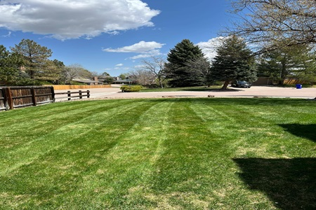
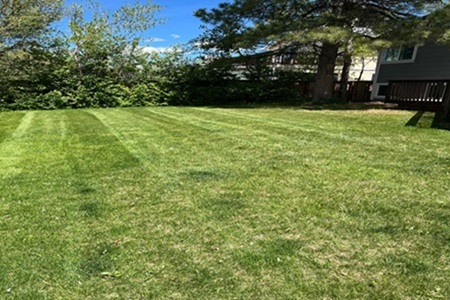
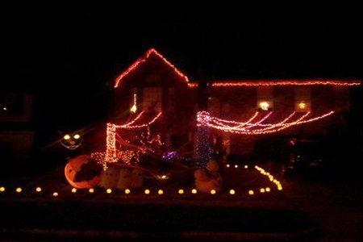

Mowing

The most common and efficient way to mow your lawn. You can mow in horizontal rows for wide yards, vertical rows for longer lawns, or in either direction for square yards. Another design is checkered. You can create this pattern by mowing a straight line, then mowing back in the reverse direction, slightly overlapping the first line.
Cutting your grass too short can damage it and make it harder for it to absorb nutrients, water, and sunlight. It can also impair root growth and slow down growth. When mowing, you should avoid removing more than one-third of the grass's height.
Yard Clean

Remove leaves, sticks, and other debris that may have accumulated over the winter. This will help your lawn get the nutrients it needs to grow. Remove debris from your gutters to prevent damage from leaking and flooding. Remove dead leaves, weeds, and other debris from around your plants to help them grow. Mulch helps your soil retain moisture, suppresses weeds, and keeps the soil cool.
We pick up or sweep away leaves, twigs, and petals as soon as you notice them to prevent matting. Mulching can feed your lawn andhelp your soil retain moisture.
Outdoor Decoration

YSL Lawn Care’s holiday decorating services take the stress out of the season by professionally installing and arranging your decorations to suit your style, space, and budget. Whether it’s LED lighting, festive planters, garlands, wreaths, or fully decorated trees, YSL ensures your outdoor spaces are beautifully adorned. They handle both fresh-cut and artificial decorations, along with take-down and storage, to keep your property looking festive and hassle-free throughout the holidays.
!!PLEASE BE SAFE!!